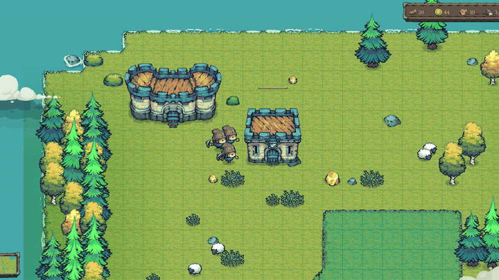
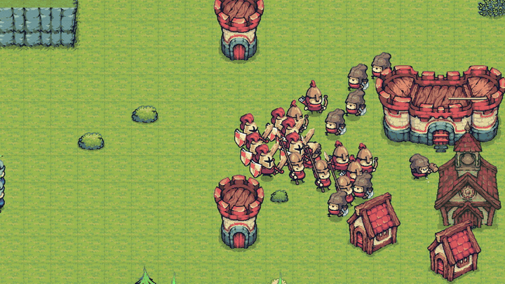
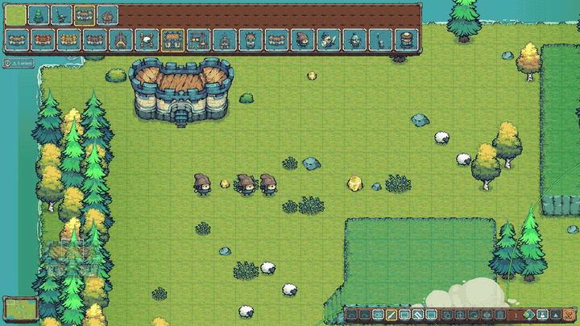
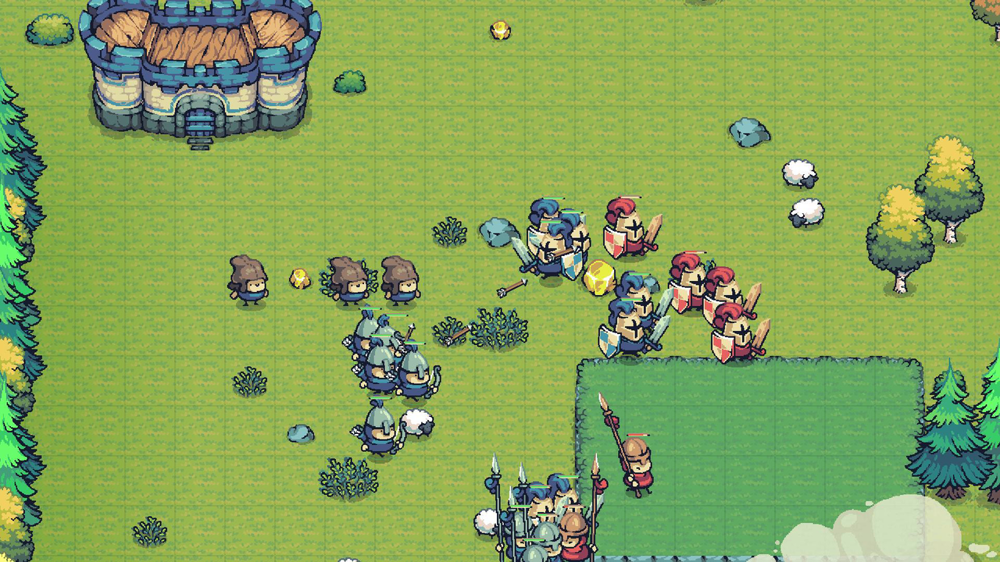

Qué se hace en una partida
Empiezas con un Castillo, tres Peones y unos pocos recursos. Los Peones talan, pican oro y llevan cada carga al Castillo a mano. Los árboles dejan tocón y las vetas se agotan, así que antes o después levantas un segundo Castillo sobre el siguiente grupo de recursos. Los corrales dan comida sin trabajo; las Casas suben la población; el Cuartel, la Arquería y el Monasterio entrenan Guerreros, Arqueros, Lanceros y Monjes; nueve tecnologías en tres ramas lo afilan todo.
El mapa se comparte con campamentos neutrales: goblins, trolls, nidos de arañas, guaridas de ladrones, calas piratas en el agua. Cada uno tiene guardianes, un puesto fijo que defienden, regeneración si los dejas en paz y una recompensa al limpiarlo. Mercados, mercenarios y tabernas neutrales esperan en el centro del mapa a quien llegue primero. Gana el último jugador con un Castillo en pie.




Características
- Simulación en tiempo real a paso fijo de 20 Hz, dibujada a 60 fps interpolando entre ticks.
- Movimiento libre en píxeles. A* sobre la cuadrícula de 64 px sin cortar esquinas, suavizado del camino y separación local por hash espacial. Las unidades nunca bloquean casillas; edificios, recursos y terreno sí. 200 unidades cruzan el mapa a 60 fps.
- Una economía de viajes. Árboles y vetas finitos, Peones que recolectan, se cargan y entregan, comida pasiva de los corrales y expansión con un segundo Castillo. Mercado, mercenarios y taberna neutrales.
- Altura que cuenta. Mesetas y acantilados unidos solo por escaleras laterales de una casilla. Las unidades a distancia y las torres ganan alcance y visión desde arriba; el cuerpo a cuerpo nunca cruza un borde.
- 21 tipos de campamento neutral con 24 criaturas del Enemy Pack, incluidos guardianes estáticos de agua como el tiburón arponero y el pez bomba. El mapa de cuatro jugadores tiene 33 campamentos.
- IA rival para dos a cuatro jugadores que se expande, comercia en el mercado, levanta torres camino del enemigo y elige el objetivo de cada oleada por distancia o debilidad. Ajustada jugando cientos de partidas simuladas, porque la simulación no tiene azar y una sola partida es una muestra caótica, no una medida.
- Niebla de guerra de tres estados, minimapa con avisos y controles de Warcraft 3: recuadro, click derecho contextual, atacar en movimiento, parar y mantener, grupos de control, bordes y WASD. Todas las teclas se pueden reasignar.
- Editor de mapas al estilo Mario Maker. Se pinta terreno, recursos, campamentos y posiciones de salida sobre el mundo real, P prueba el mapa en menos de una décima de segundo y Esc devuelve al editor. Pincel, rectángulo, cubo y selección, copiar y pegar, girar y espejar, y un comprobador que avisa de bases inaccesibles, recursos vigilados o falta de sitio para construir.
- Tres mapas oficiales. El Valle (96×64, dos jugadores), La Encrucijada (160×160, cuatro jugadores, simetría rotacional) y Cuatro vientos, hecho con el editor. Los dos primeros salen de generadores en Python que validan simetría, conectividad, anchura de los cuellos y distancias entre bases.
- Ranuras de guardado con autoguardado, español e inglés, 59 sonidos, música y ambiente.
Capturas




Cómo está hecho
El juego son dos mitades que nunca se mezclan. La simulación es C# puro, sin nodos de Godot ni delta de frame, que avanza a paso fijo, se prueba con xUnit sin abrir el motor y se serializa a JSON para guardar. La capa de Godot dibuja ese estado y aloja una interfaz que nunca toca una entidad: solo encola órdenes, igual que la IA.
Esa separación es lo que hace posible el resto. La batería de tests juega partidas enteras: diez minutos de IA contra IA en el Valle y quince con cuatro IAs en La Encrucijada corren sin ventana en unos treinta segundos, y comprueban cosas como "nadie es eliminado antes del minuto diez" o "ninguna IA se queda ociosa un minuto". Un arnés de línea de comandos maneja el motor real con entrada sintética y órdenes con guion, saca capturas y mide el tiempo por frame, así que cualquier cambio se verifica sin ratón.
| Motor | Godot 4.6.2 .NET, C# 12 sobre .NET 8, sin más dependencias |
|---|---|
| Render | Compatibility (OpenGL 3.3), filtro nearest, ajuste al píxel |
| Código | Unas 16.000 líneas de C# en 88 ficheros, más 4.300 de tests |
| Tests | 181, incluidas partidas simuladas completas |
| Rendimiento | 4 IAs y 300 unidades a 60 fps con un tick de simulación de 1,3 ms |
| Contenido | 29 tipos de unidad, 7 edificios, 9 tecnologías, 21 tipos de campamento, 3 mapas |
| Textos | 519 cadenas traducidas a español e inglés |
El terreno y las capas estáticas son comandos de dibujo retenidos, no nodos; solo lo que se anima es un sprite; los anillos de selección, la espuma y las sombras son nodos únicos que se redibujan cuando algo cambia. La escena entera se queda en torno a una docena de draw calls con cientos de unidades en pantalla.
El proyecto se ha hecho con Claude Code programando y conmigo dirigiendo el diseño, jugando cada build y decidiendo qué entra y qué se descarta. El repositorio con el código es privado; esta web y su repositorio son la presentación pública.
Estado
Jugable de principio a fin: economía, construcción, entrenamiento, combate, tecnología, IA para dos y cuatro jugadores, campamentos neutrales, guardado, audio, editor y dos idiomas. El desarrollo empezó el 8 de septiembre de 2026. La hoja de ruta apunta a Steam, y por eso las estadísticas de partida ya viven en la simulación y cada guardado es un fichero por ranura.
Créditos
- Arte: Tiny Swords y su Enemy Pack, de Pixel Frog, usados bajo su licencia. Los packs no se redistribuyen aquí.
- Tipografía: Caladea, de Huerta Tipográfica, SIL Open Font License.
- Sonidos: Pixabay.
- Motor: Godot Engine.